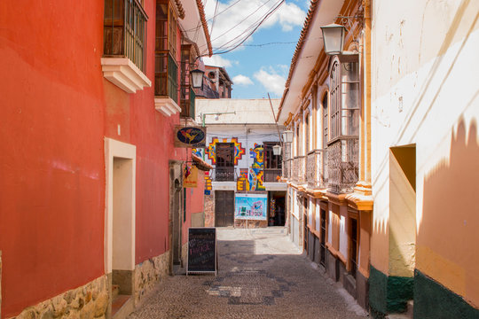
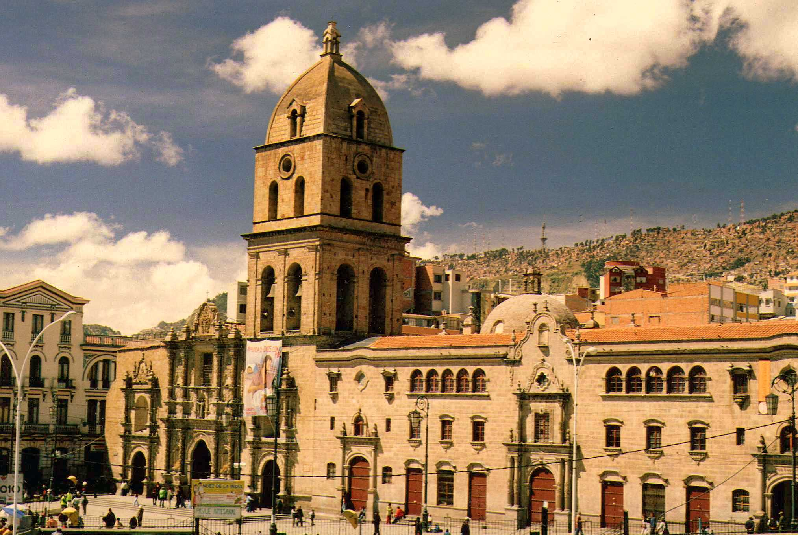

El Legado Histórico en la Ciudad
La Paz, fundada en 1548 por Alonso de Mendoza como **Nuestra Señora de La Paz**, se estableció como un punto clave entre Potosí y el resto del Virreinato. Sus lugares más emblemáticos son testigos silenciosos de la Colonia y la posterior lucha por la Independencia.

Plaza Murillo: Escenario Político
Originalmente la Plaza Mayor, fue el lugar de proclamación de la Independencia en 1809, liderada por **Pedro Domingo Murillo**. Es el centro del poder, flanqueada por el Palacio de Gobierno y el Congreso.

Catedral Metropolitana: Fe y Fundación
Su construcción se prolongó por siglos. Se alza sobre el lugar donde se erigió la primera iglesia colonial. Simboliza la profunda influencia de la Iglesia Católica en el desarrollo social y político de la región andina.

Calle Jaén: La Esquina de los Museos
Una de las pocas calles coloniales que conserva su trazado original. Se dice que fue el límite de la ciudad y zona de leyendas. Hoy concentra museos vitales para entender la historia precolombina y republicana.

Iglesia de San Francisco: Arte Mestizo
Comenzada en 1548, su fachada es un ejemplo impresionante del **Barroco Mestizo**, donde elementos andinos (como fauna y flora local) se fusionaron con el arte europeo. Fue un centro fundamental de evangelización.